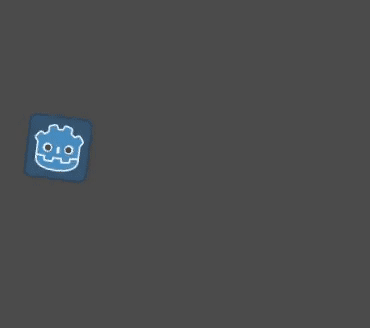
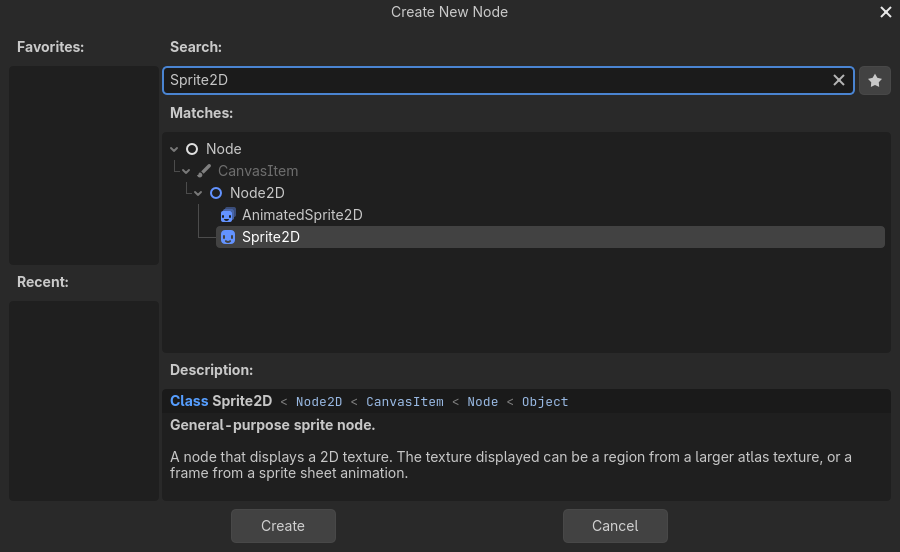
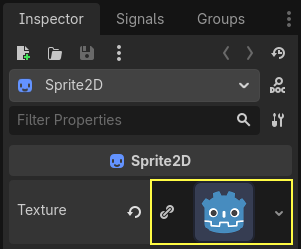
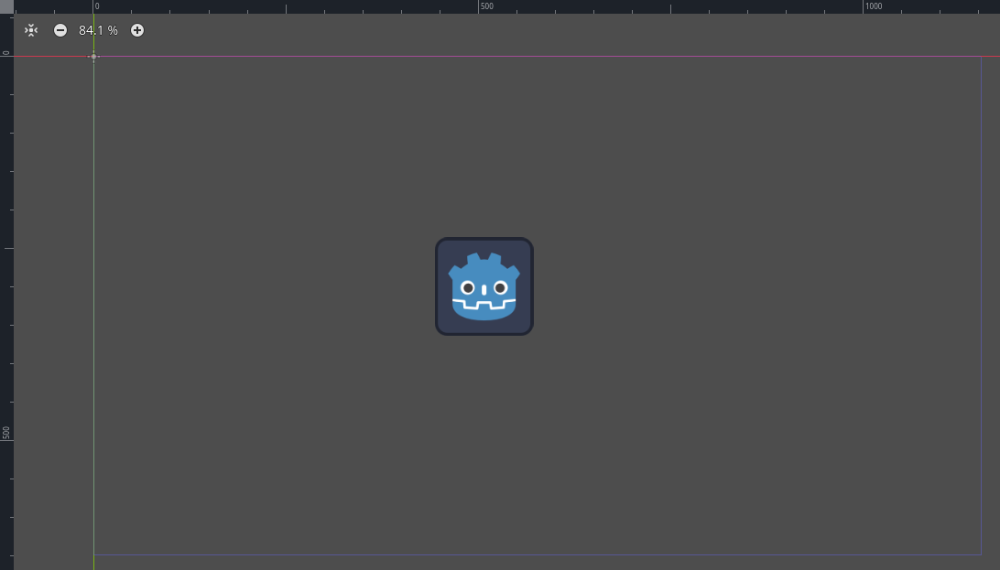
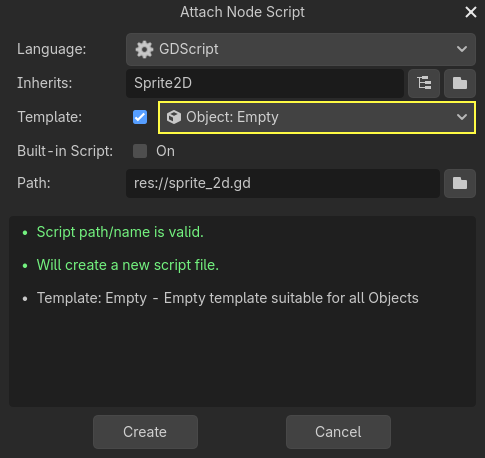
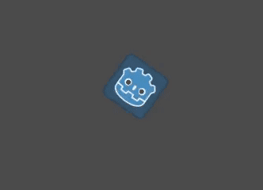

Creating your first script
In this lesson, you will code your first script to make the Godot icon turn in circles. As we mentioned in the introduction, we assume you have programming foundations.
This tutorial is written for GDScript, and the equivalent C# code is included in another tab of each codeblock for convenience.

See also
To learn more about GDScript, its keywords, and its syntax, head to the GDScript section. To learn more about C#, head to the C#/.NET section.
Project setup
Please create a new project to start with a clean slate. Your project should contain one picture: the Godot icon, which we often use for prototyping in the community.
We need to create a Sprite2D node to display it in the game. In the Scene dock, click the button.

Type "Sprite2D" in the search bar to filter nodes and double-click on Sprite2D to create the node.

Your Scene tab should now only have a Sprite2D node.

A Sprite2D node needs a texture to display. In the Inspector on the right, you
can see that the Texture property says <empty>. To display the
Godot icon, click and drag the file icon.svg from the FileSystem dock onto the
Texture slot.

Note
You can create Sprite2D nodes automatically by dragging and dropping images on the viewport.
Then, click and drag the icon in the viewport to center it in the game view.

Creating a new script
To create and attach a new script to our node, right-click on Sprite2D in the Scene dock and select .

The Attach Node Script window appears. It allows you to select the script's language and file path, among other options.
Change the Template field from Node: Default to Object: Empty to
start with a clean file. Leave the other options set to their default values and
click the button to create the script.

Note
C# script names need to match their class name. In this case, you should name the
file MySprite2D.cs.
The Script workspace should appear with your new sprite_2d.gd file open and
the following line of code:
extends Sprite2D
using Godot;
using System;
public partial class MySprite2D : Sprite2D
{
}
Every GDScript file is implicitly a class. The extends keyword defines the
class this script inherits or extends. In this case, it's Sprite2D, meaning
our script will get access to all the properties and functions of the Sprite2D
node, including classes it extends, like Node2D, CanvasItem, and
Node.
Note
In GDScript, if you omit the line with the extends keyword, your
class will implicitly extend RefCounted, which
Godot uses to manage your application's memory.
Inherited properties include the ones you can see in the Inspector dock, like
our node's texture.
Note
By default, the Inspector displays a node's properties in "Title Case", with capitalized words separated by a space. In GDScript code, these properties are in "snake_case", which is lowercase with each word separated by an underscore.
You can hover over any property's name in the Inspector to see a description and its identifier in code.
Hello, world!
Our script currently doesn't do anything. Let's make it print the text "Hello, world!" to the Output bottom panel to get started.
Add the following code to your script:
func _init():
print("Hello, world!")
public MySprite2D()
{
GD.Print("Hello, world!");
}
Let's break it down. The func keyword defines a new function named
_init. This is a special name for our class's constructor. The engine calls
_init() on every object or node upon creating it in memory, if you define
this function.
Note
GDScript is an indent-based language. The tab at the start of the line
that says print() is necessary for the code to work. If you omit
it or don't indent a line correctly, the editor will highlight it in
red and display the following error message: "Indented block expected".
Save the scene as sprite_2d.tscn if you haven't already, then press F6 (Cmd + R on macOS)
to run it. Look at the Output bottom panel that expands.
It should display "Hello, world!".

Delete the _init() function, so you're only left with the line extends
Sprite2D.
Turning around
It's time to make our node move and rotate. To do so, we're going to add two
member variables to our script: the movement speed in pixels per second and the
angular speed in radians per second. Add the following after the extends Sprite2D line.
var speed = 400
var angular_speed = PI
private int _speed = 400;
private float _angularSpeed = Mathf.Pi;
Member variables sit near the top of the script, after any "extends" lines,
but before functions. Every node
instance with this script attached to it will have its own copy of the speed
and angular_speed properties.
Note
Angles in Godot work in radians by default, but you have built-in functions and properties available if you prefer to calculate angles in degrees instead.
To move our icon, we need to update its position and rotation every frame in the
game loop. We can use the _process() virtual function of the Node class.
If you define it in any class that extends the Node class, like Sprite2D, Godot
will call the function every frame and pass it an argument named delta, the
time elapsed since the last frame.
Note
Games work by rendering many images per second, each called a frame, and they do so in a loop. We measure the rate at which a game produces images in Frames Per Second (FPS). Most games aim for 60 FPS, although you might find figures like 30 FPS on slower mobile devices or 90 to 240 for virtual reality games.
The engine and game developers do their best to update the game world and render images at a constant time interval, but there are always small variations in frame render times. That's why the engine provides us with this delta time value, making our motion independent of our framerate.
At the bottom of the script, define the function:
func _process(delta):
rotation += angular_speed * delta
public override void _Process(double delta)
{
Rotation += _angularSpeed * (float)delta;
}
The func keyword defines a new function. After it, we have to write the
function's name and arguments it takes in parentheses. A colon ends the
definition, and the indented blocks that follow are the function's content or
instructions.
Note
Notice how _process(), like _init(), starts with a leading
underscore. By convention, Godot's virtual functions, that is to say,
built-in functions you can override to communicate with the engine,
start with an underscore.
The line inside the function, rotation += angular_speed * delta, increments
our sprite's rotation every frame. Here, rotation is a property inherited
from the class Node2D, which Sprite2D extends. It controls the rotation
of our node and works with radians.
Tip
In the code editor, you can Ctrl + Click (Cmd + Click on
macOS) on any built-in property or function like position,
rotation, or _process to open the corresponding documentation
in a new tab.
Run the scene to see the Godot icon turn in-place.

Note
In C#, notice how the delta argument taken by _Process() is a
double. We therefore need to convert it to float when we apply
it to the rotation.
Moving forward
Let's now make the node move. Add the following two lines inside of the _process()
function, ensuring the new lines are indented the same way as the rotation += angular_speed * delta line before
them.
var velocity = Vector2.UP.rotated(rotation) * speed
position += velocity * delta
var velocity = Vector2.Up.Rotated(Rotation) * _speed;
Position += velocity * (float)delta;
As we already saw, the var keyword defines a new variable. If you put it at
the top of the script, it defines a property of the class. Inside a function, it
defines a local variable: it only exists within the function's scope.
We define a local variable named velocity, a 2D vector representing both a
direction and a speed. To make the node move forward, we start from the Vector2
class's constant Vector2.UP, a vector pointing up, and rotate it by calling the
Vector2 method rotated(). This expression, Vector2.UP.rotated(rotation),
is a vector pointing forward relative to our icon. Multiplied by our speed
property, it gives us a velocity we can use to move the node forward.
We add velocity * delta to the node's position to move it. The position
itself is of type Vector2, a built-in type in Godot
representing a 2D vector.
Run the scene to see the Godot head run in circles.
Note
Moving a node like that does not take into account colliding with walls or the floor. In Your first 2D game, you will learn another approach to moving objects while detecting collisions.
Our node currently moves by itself. In the next part, Listening to player input, we'll use player input to control it.
Complete script
Here is the complete sprite_2d.gd file for reference.
extends Sprite2D
var speed = 400
var angular_speed = PI
func _process(delta):
rotation += angular_speed * delta
var velocity = Vector2.UP.rotated(rotation) * speed
position += velocity * delta
using Godot;
using System;
public partial class MySprite2D : Sprite2D
{
private int _speed = 400;
private float _angularSpeed = Mathf.Pi;
public override void _Process(double delta)
{
Rotation += _angularSpeed * (float)delta;
var velocity = Vector2.Up.Rotated(Rotation) * _speed;
Position += velocity * (float)delta;
}
}